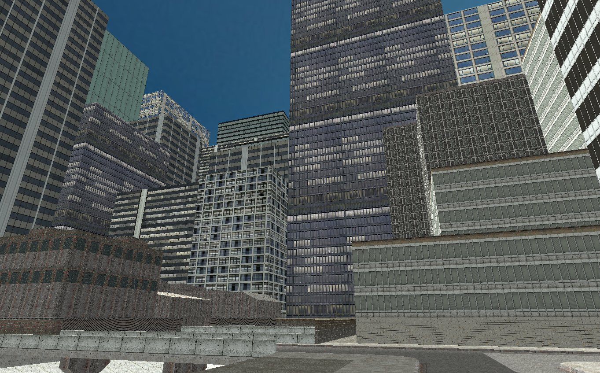

Welcome to WebVerse. Here are some recommended worlds to start with.
Cityscape

This sample world contains a small area of a city. It contains skyscrapers,
city blocks, gridded roads, as well as a section of a highway. A simple character controller is included
with WASD movement, with the Q/Z keys used to ascend/descend. VR mode supported as well.
This sample world is set in space, with a mining facility built on an
asteroid. A simple character controller is included with WASD movement, with the Q/Z keys used to
ascend/descend. VR mode supported as well.
This sample world contains the Eiffel Tower, which can be viewed from across the Siene
at the Palais de Chaillot. The 3D model was constructed using photogrammetry, so some shadows do exist. A simple
character controller is included with WASD movement, with the Q/Z keys used to ascend/descend. VR mode supported as well.
This sample world contains Iceland's Gullfoss (which translates to "Golden Falls").
The 3D model was constructed using photogrammetry, so some shadows do exist. A simple character controller
is included with WASD movement, with the Q/Z keys used to ascend/descend. VR mode supported as well.
This sample world contains a temple scene. A lot of detail has been put
into the 3D model and its textures. A simple character controller is included with WASD movement, with
the Q/Z keys used to ascend/descend. VR mode supported as well.
This sample world contains Meteor Crater in Arizona, USA. The 3D
model was constructed using photogrammetry, so some shadows do exist. A simple character controller
is included with WASD movement, with the Q/Z keys used to ascend/descend. VR mode supported as well.